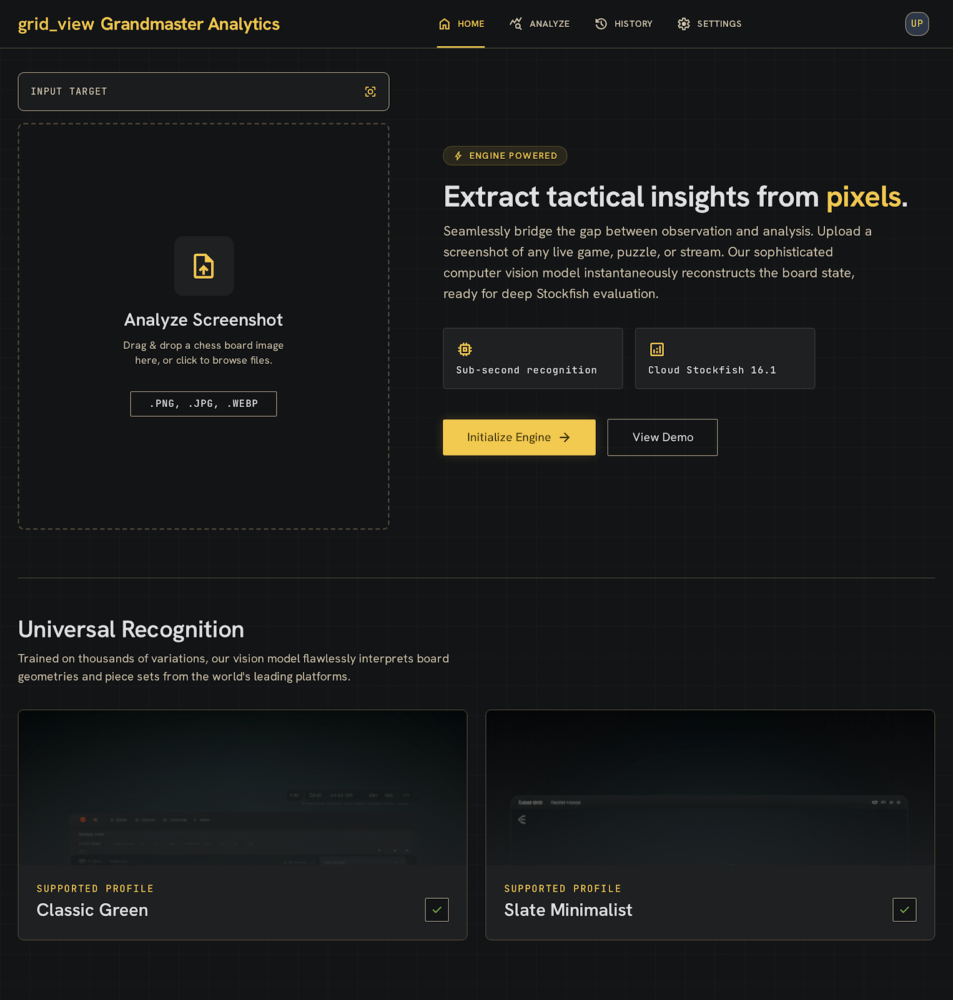
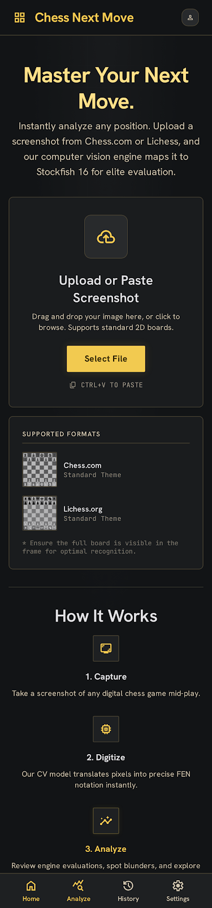

Image Target Input
center_focus_strong
upload_file
Analyze Screenshot
Drag & drop a chess board image here, click to browse, or paste directly with Ctrl + V
.PNG, .JPG, .WEBP
Align Board Coordinates
Drag corners directly or use sliders
bolt
Engine powered
Extract tactical insights from pixels.
Seamlessly bridge the gap between observation and analysis. Upload a screenshot of any live game, puzzle, or chess stream. Our sophisticated computer vision reconstructs the board state, ready for deep client-side Stockfish evaluation.
memory
Sub-second local scanning
Segments pieces based on shape profiles offline.
analytics
WASM Stockfish Engine
Calculates 6 lines concurrently in a Web Worker.
Universal Recognition
Flawlessly interprets board geometries and pieces from standard screenshot themes:

Theme Profile 1
Chess.com Standard
check

Theme Profile 2
Lichess Classic
check
Player to Move:
Flip View:
Select Piece and click on board squares
Analysis History
Review and query past evaluations.
search